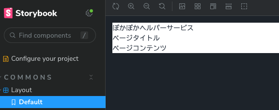
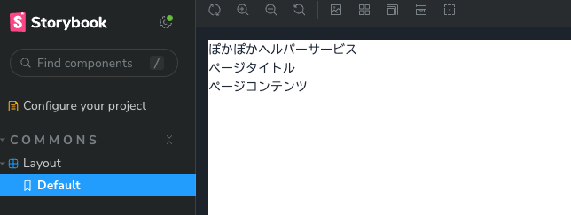
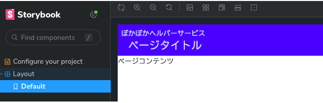
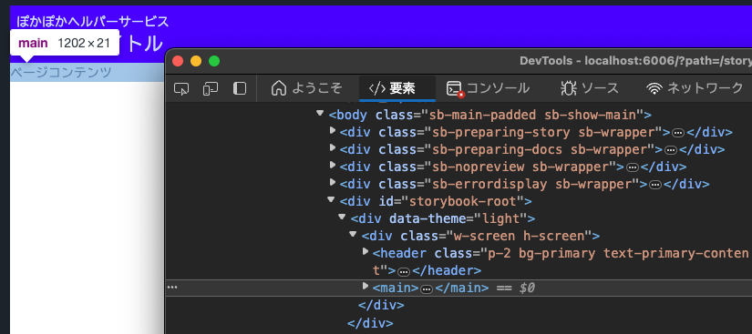
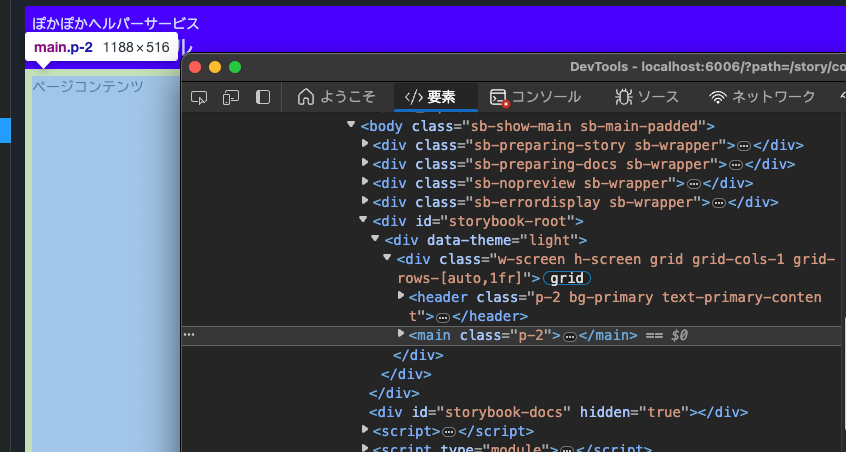

1. レイアウトの作成
多くのアプリは、各画面で共通のヘッダやフッタ、ナビゲーターを持ちます。
これをページごとに実装しては、効率悪いので共通化したいところです。
React だけであれば、そのコンポーネントを作成し、各ページをラップする、ということもできます。
Next.js では、その機能を提供してくれる仕組みがあります。
Building Your Application: Routing | Next.js
Note
ここでは、Next.js ver 13 以降でリリースされた、APP Router を利用します。
Layout コンポーネントの仕様を検討する
Layout コンポーネントは、共通のヘッダと、ページのコンテンツを表示する機能を持つ必要があります。
※ヘッダーの色は、テーマカラーの Primary になります。
APP Router の仕様で、layout.tsx というファイルを設置するだけで、その配下のページは、この Layout でラップされるようになります。
ただ、{} の部分が動的になります。これらはコンポーネントのプロパティとして、ページから受け取りたいところですが、ページから Layout に値を渡すことができません。
そこで、{} の部分は Context を使って渡すこととします。Context は、Reactコンポーネントの階層を横断して、データを渡す仕組みです。プロパティでは、子にしか値を渡せませんが、Context では、階層に関係なく値を共同で管理できます。
Note
Context の使い道としてよく、「親から子、孫へバケツリレーをしなくて済む」というメリットとして説明されることが多いですが、筆者は「プロパティで渡せるものはできるだけ Context は使わない」という方針でいます。
理由として、Context はグローバル変数な性質を持ち、コンポーネントの独立性、宣言的な記述を崩してしまい、試験性を損なう恐れがあるからです。
今回のように、親子関係を持たないコンポーネント間で、且つシンプルな値を共有するときに使うこととします。
ただし、パフォーマンスの問題から Context を使うこともあるので、すべてのケースに当てはまるものでは無いですが、基本的には上の方針とし、例外的に Context を利用する、ということにしましょう。
Next.js では、Server コンポーネントと、Client コンポーネントをサポート(実際には、React の機能です)します。Context は、Clientコンポーネントしかサポートしないので、注意が必要です。
Layout をクライアントコンポーネントとしてしまうと、使えなくなる機能があるので、ヘッダーの部分を別コンポーネントとしてこれを Client コンポーネントにします。
いきなり Context を使ったコンポーネントを書くのは少々難しいので後回しにして、まずは静的な Layout コンポーネントを作成してみましょう。
Layout の作成
Next.js の新しい(2023年) App router では、layout.tsx というファイルを作成することで、
その配下のページに対して、レイアウトを適用することができます。
Routing: Pages and Layouts | Next.js
ここでは、介護スタッフ向けのページのレイアウトとして、src/pages/careStaff/layout.tsx を作成します。
コンポーネント本体
| src/app/careStaff/layout.tsx | |
|---|---|
テストファイル
ここでは、<main>内にコンテンツが表示されることを確認するテストを書いています。
| src/app/careStaff/layout.test.tsx | |
|---|---|
Storybook ファイル
エディタ上でエラーが出ると思いますが、ここでは無視してください。
| src/app/acreStaff/layout.stories.tsx | |
|---|---|
まずテストを実行
テストを実行してみます。
テストの内容は、role="main" の要素が存在するかどうかを確認しています。
そのような実装はしていないので、エラーになると思います。エラーを解消するように修正します。
| src/caresStaff/layout.tsx | |
|---|---|
再度テストを実行すると、テストが成功するでしょう。
ページのコンテンツを表示する
Next.js の layout の仕様では、ページのコンテンツは、{children} プロパティで受け取ることになっています。これは、React の 子コンポーネントの仕様です。
テストを実装します。ここでは、テストの方で子要素を指定しています。実際のページでは、<Layout> を参照することは無いのですが、テストではNext.jsの Routing の仕様は効かないので、通常のコンポーネントと同じように書きます。
テストでは、子要素のテキストが取得できるかどうかで判断しています。
```ts title="src/app/careStaff/Layout.test.tsx" hl_lines=""
test('render', () => {
render(
Note
childrenと独自のプロパティを組み合わせる場合はジェネリクスを使い、PropsWithChildren<独自の型>とすることができます。
ページヘッダーを表示する
次に、ページヘッダーを表示するようにします。ページヘッダーには、ページタイトルと、会社名を表示します。
それぞれ、<div>要素を使うこともできますが、目的に会ったタグやロールを使うと、アクセシビリティが向上し、より良いサイトになります。
ページヘッダーには、<header>要素を使いますが、テストではロールを指定して要素を確認します。
なぜロールを使用するのか
About Queries | Testing Library
Based on the Guiding Principles, your test should resemble how users interact with your code (component, page, etc.) as much as possible. With this in mind, we recommend this order of priority:
Queries Accessible to Everyone Queries that reflect the experience of visual/mouse users as well as those that use assistive technology.
i. getByRole: This can be used to query every element that is exposed in the accessibility tree. With the name option you can filter the returned elements by their accessible name. This should be your top preference for just about everything. There's not much you can't get with this (if you can't, it's possible your UI is inaccessible). Most often, this will be used with the name option like so: getByRole('button', {name: /submit/i}). Check the list of roles.
和訳：
指導原則に基づき、あなたのテストは、ユーザーがあなたのコード（コンポーネント、ページなど）とどのようにインタラクトするかにできるだけ似せてください。このことを念頭に置いて、優先順位を次のようにすることをお勧めします：
- 誰にでもアクセスしやすいクエリ 視覚／マウスユーザーや支援技術を使用するユーザーの経験を反映したクエリ。
i. getByRole：これは、アクセシビリティツリーで公開されているすべての要素を問い合わせるために使用できます。nameオプションを使用すると、アクセス可能な名前によって返される要素をフィルタリングすることができます。ほとんどの場合、これを最優先すべきです。これで得られないものはあまりありません（得られない場合は、UIがアクセシブルでない可能性があります）。ほとんどの場合、これは次のようにnameオプションと一緒に使用されます: getByRole('button', {name: /submit/i})。ロールのリストを確認してください。
ページタイトルは、contextから取得することとしましたが、これはあとから実装するので、今はその内容は表示しないこととし、タグがあることだけを確認しましょう。
実装は次のようになります。
| src/app/careStaff/layout.tsx | |
|---|---|
見た目を整える
渡されたプロパティを表示することができたので、今度は見た目を作っていきましょう。
これは、Jest で確認するのは非常に難しいので、Storybook を使って確認していきます。
まず、Storybook を実行しましょう。
スタイルを当てていないので、シンプルな画面がみえます。これを整えていきましょう。

レイアウトを画面いっぱいに広げる
レイアウトは、画面全体を範囲とするので、画面全体に枠を広げる必要があります。これには css の width: 100%; height: 100%; を使うのが良いでしょう。
Tailwind CSS では、w-full と h-full というクラスが用意されています。これを、外側の <div> に与えましょう。
Note
vw と vh は、それぞれ、画面の幅と高さを表します。
ビューポート単位「vw, vh, vmin, vmax」を使ったCSSのテクニックのまとめ | コリス
| src/app/careStaff/Layout.tsx | |
|---|---|

画面いっぱいに広がりました。スクロールバーが出ていますが、これは Storybook がその外側に <div> を挟んでいる影響なので、
気にしないでください。
ヘッダを整える
次にヘッダを整えましょう。
ヘッダの部分の高さを固定し、背景色をつけます。また、ページタイトルも大きい文字で表示します。
ついでに、アプリ名も追加しています。
| src/app/careStaff/Layout.tsx | |
|---|---|
bg-* は背景色を、p-* は四方の、pl-* は左側の余白(padding)を表します。
ここでのポイントは、text-primary-content というクラスです。これは、文字色を Primary カラーのコンテンツ色
にする、という意味です。
Primary の色の濃さによって、文字色が見やすいように 白か黒が定義されています。
色を直接指定してしまうと、テーマを変更したときに、文字色が見えなくなってしまう可能性があります。
色はなるべく、テーマの色を使うようにしましょう。

コンテンツの部分のスタイル
コンテンツの部分は、分かりづらいのですが、高さが画面いっぱいになっていません。
ブラウザの開発者ツール(F12) で確認してみます。

高さを一派に広げる方法はいくつかありますが、ここでは、Grid を使ってレイアウト全体を制御するのが良いでしょう。
5分で完璧に分かる！CSS Gridの基本的な使い方を解説 | コリス
また、これも分かりづらいですが、背景色もテーマカラーの背景色にしておきます。
コンテンツの余白も設定しておくと良いでしょう。
| src/app/careStaff/layout.tsx | |
|---|---|
Grid では、列1つ、行2つのレイアウトを定義しています。
また行の配置として、grid template column を使って、 1番目がコンテンツのサイズ(auto)と、2番目が残りのスペースを占めるように(1fr) しています。

このように、Grid を使うことで簡単にレイアウトを整えることができます。
ここで気になるのは、className が長くなってしまうことでしょう。Tailwind CSS では、多くのスタイルを与えると、
文字列が長大になってしまいます。
そこで、クラスを1つの文字列ではなく、配列のように作成できる
classnames というパッケージを利用します。
これを使って、次のように変更します。
ページを作成してみる
介護スタッフ向けのトップページとなるファイルを作成して、レイアウトが適用されるか、確認してみましょう。
| src/pages/careStaff/pages.tsx | |
|---|---|
ブラウザで表示してみましょう。
ページにレイアウトを適用できました。
ここでのまとめ
Next.js のレイアウト機能を使って、共通のレイアウトを作成しました。
簡単なコンポーネントのテストや、Storybookを使った見た目の確認とカタログを作成する手順を学びました。
また、CSS の Grid によるレイアウトも学びました。
Grid は、 Flex と並んで、非常によく使われるので、下記で学習しておくと良いでしょう。
5分で完璧に分かる！CSS Gridの基本的な使い方を解説 | コリス
コンポーネントのテストやStorybookなどの各ファイルは、パターンになるので、 テンプレートからコンポーネントの一連のファイルを生成することができると 便利そうです。
次回は、実装をちょっと離れて、Hygen というツールを使ってこれを実現してみます。